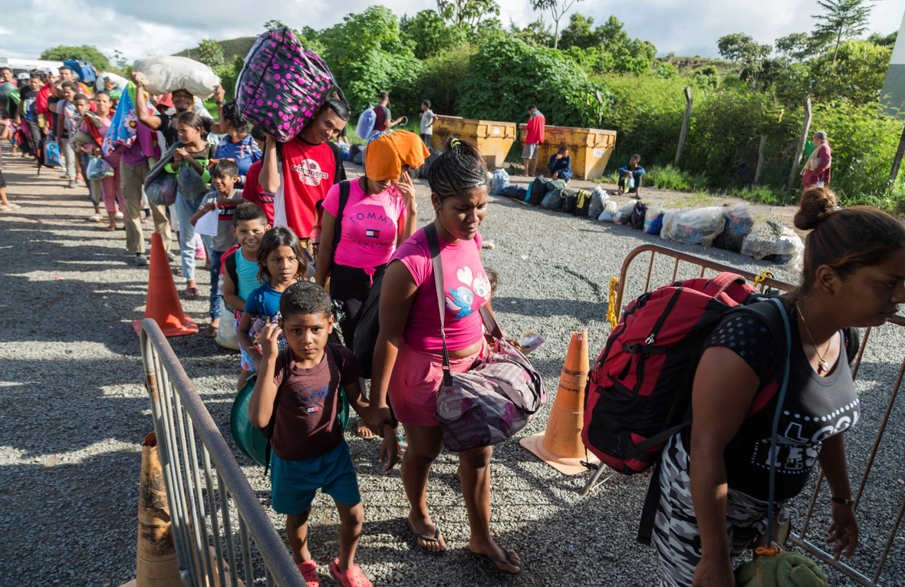

¿Por qué surge este sitio web?
Hola Amigos, esta página surge de la necesidad de decir la realidad que nos ha tocado vivir los venezolanos y los millones de personas que ha salido del país en busca de un futuro incierto, donde incluso miles de personas han perdido la vida en diferentes circunstancias, soy al igual que ustedes un migrante mas, errante buscando un mejor futuro, espero que se sientan identificados con algunas de mis publicaciones, ACLARO!!! NO pertenesco a ninguna organización política ni me financia ninguna organización, soy un ciudadano mas de mi país.
- 